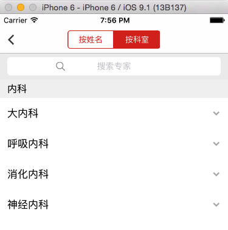

情景
项目中遇到一个页面中是以一个scrollview横向Tab展示两个不同功能的显示，如图：

由于滑动返回手势和scrollview的滑动返回手势冲突了，导致页面不再能够滑动返回。类似的还有图片浏览功能也出现过。
原因
iOS系统中，滑动返回手势，其实是一个UIPanGestureRecognizer，系统默认的操作是只有滑动屏幕的左边的某个位置，UIPanGestureRecognizer才会起作用。UIScrollView的滑动手势也是UIPanGestureRecognizer。
由于scrollView的滑动手势拦截了事件，所以系统的滑动返回手势就不会再被触发。
解决
根据上面的原因，我们需要响应系统的手势，那么我们有两个思路，一个思路是中断ScrollView的其实是一个UIPanGestureRecognizer手势，以便响应系统的手势，另一个是让ScrollView不阻拦系统的手势。
第一个思路的实现：
1 2 3 4 5 6 7
| - (UIView *)hitTest:(CGPoint)point withEvent:(UIEvent *)event { if (在ScrollViewd最左边，且当前是向右滑动) {//伪代码 return nil; } else { return [super hitTest:point withEvent:event]; } }
|
第二种，通过代理，让两种手势共存
1 2 3 4 5 6 7 8 9 10 11 12 13
| -(BOOL)gestureRecognizer:(UIGestureRecognizer *)gestureRecognizer shouldRecognizeSimultaneouslyWithGestureRecognizer:(UIGestureRecognizer *)otherGestureRecognizer { // 首先判断otherGestureRecognizer是不是系统pop手势 if ([otherGestureRecognizer.view isKindOfClass:NSClassFromString(@"UILayoutContainerView")]) { // 再判断系统手势的state是began还是fail，同时判断scrollView的位置是不是正好在最左边 if (otherGestureRecognizer.state == UIGestureRecognizerStateBegan && self.contentOffset.x == 0) { return YES; } } return NO; }
|